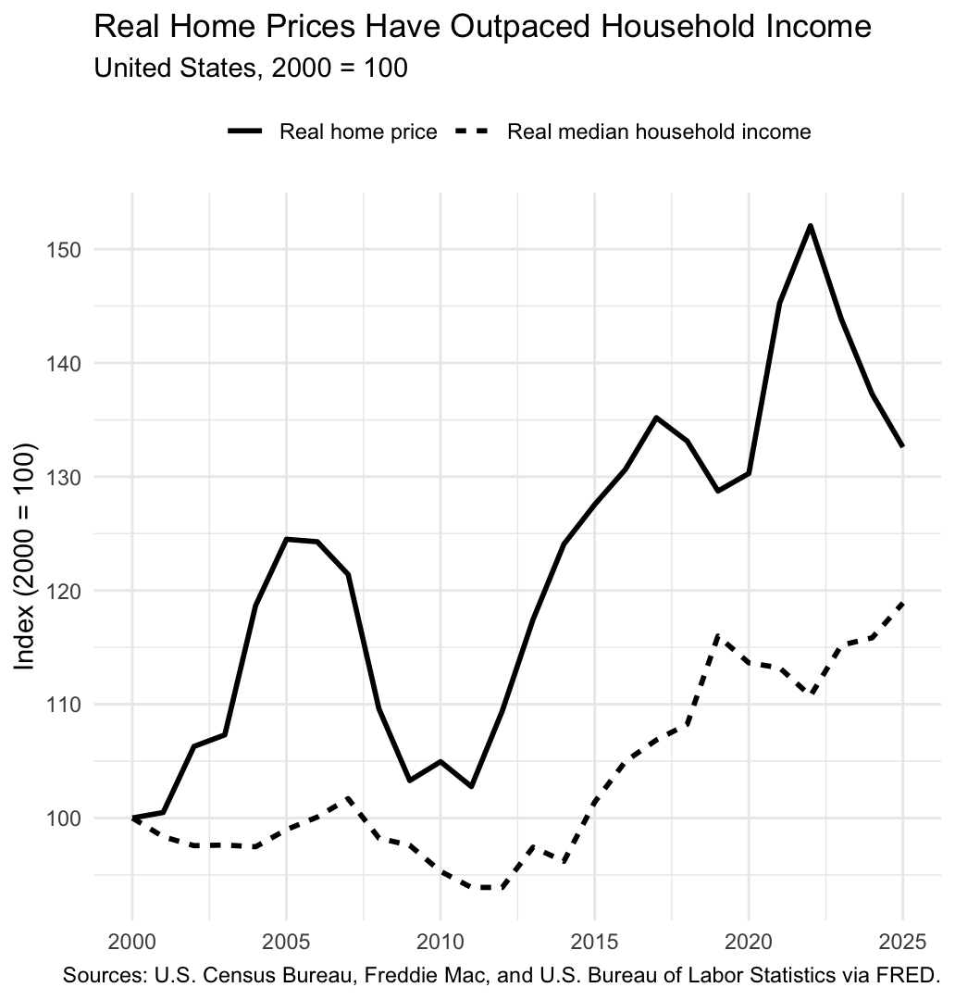
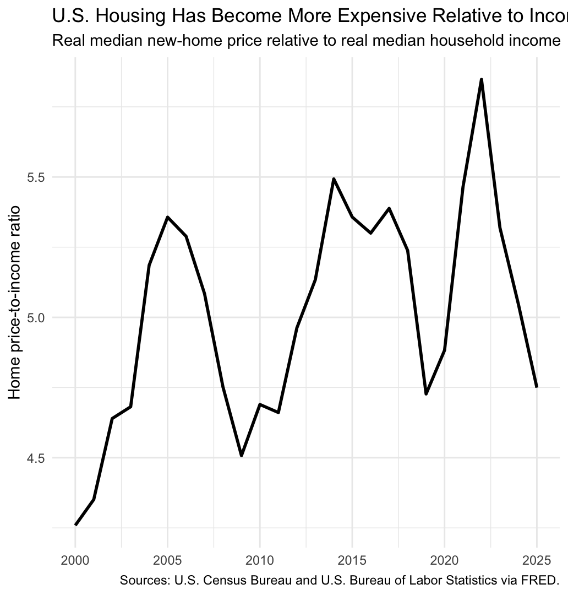
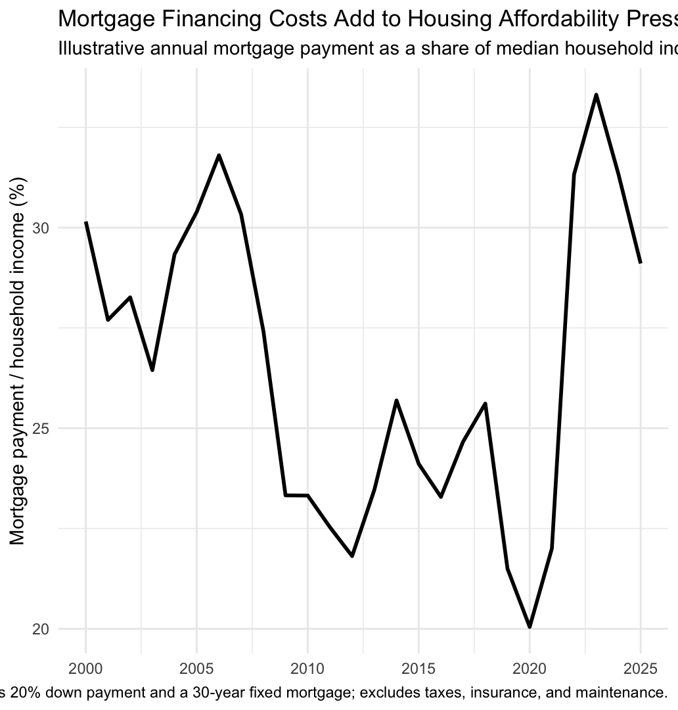

Housing affordability is not determined by the price of a home alone. It also depends on how quickly household incomes grow and how expensive it is to finance a purchase. This post asks: How has housing affordability changed in the United States since 2000? Using annual data from the Federal Reserve Bank of St. Louis (FRED), I compare new-home prices, real median household income, and 30-year mortgage rates from 2000 through 2025.
Prices have risen faster than incomes

The first figure shows a clear long-run gap. With 2000 set equal to 100, the real new-home price index reaches about 133 by 2025, while the real median household income index reaches about 119. In other words, new-home prices grew roughly 33 percent in real terms, compared with about 19 percent for real median household income. The pattern is not smooth: prices fell during the housing correction around the late 2000s and then rose strongly in the following years. Nevertheless, by 2025 the price index remains well above the income index.
Housing became more expensive relative to income

The price-to-income ratio makes the affordability story more direct. In 2000, the real median new-home price was about 4.26 times real median household income. By 2025, the ratio was about 4.75. The ratio also reached much higher levels during several periods, including the early 2000s and around 2022. This means that the long-run increase in home prices cannot be understood simply as general inflation: relative to household income, a new home became more expensive.
Mortgage rates can amplify the burden

The final figure adds the financing side of affordability. I calculate an illustrative annual mortgage payment using an 80 percent loan-to-value ratio and compare it with real median household income. The estimated burden was relatively low around 2020, when mortgage rates were unusually low, but rose sharply as rates increased after 2021. By 2025, the illustrative payment was still around 29 percent of median household income. This highlights an important point: the cost of buying a home depends on both the price of the home and the cost of borrowing.
Data and limitations
The analysis combines four FRED series: median sales price of new houses sold
(MSPUS), real median household income
(MEHOINUSA672N), the 30-year fixed mortgage rate
(MORTGAGE30US), and CPI (CPIAUCSL). Higher-frequency
series are converted to annual averages, and nominal new-home prices are
converted to 2025 dollars using the annual-average CPI.
There are several limitations. First, MSPUS measures new-home
sales, not the entire U.S. housing market. Second, the mortgage burden is an
illustrative calculation rather than observed household spending and excludes
taxes, insurance, and maintenance. Finally, the analysis is descriptive: it
shows how affordability changed, but it does not identify the causal reasons
for those changes.